NotaBene: minimal note-taking app
Role: UI Designer · Duration: August 2025 · Tools: Figma, Miro, Google Forms, Canva
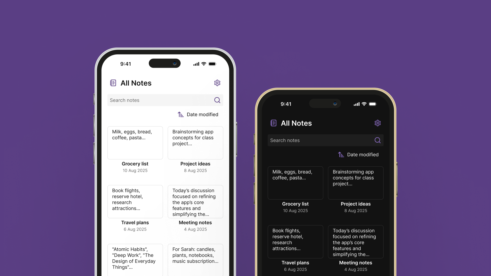
NotaBene was born from the idea of simplifying everyday note-taking — stripping the interface down to what truly matters. Instead of competing with feature-heavy apps, I focused on creating a lightweight, intuitive experience that feels calm and distraction-free. This project became a playground to explore functionalism and the “less but better” mindset in practice.
Client's Request
- a note-taking app in the style of “less, but better”
- needed urgently
- wireframes to be shaped by functionalism, meaning they’re clean and simple
- design with “less is more” in mind
The challenge lay in balancing simplicity with usability — removing excess without making the interface feel empty. I started by identifying the core interactions a user needs for efficient note-taking: adding, viewing, editing, and managing notes. From there, each design decision was guided by clarity, hierarchy, and intention.
My goal was not only to make the app look clean, but to make it feel effortless to use. Every pixel and spacing choice was an exercise in restraint — how far could I simplify without losing comfort or usability?
Problem
Existing note apps are cluttered or overly complex for quick note-taking.
Objective
Create a functional MVP note app, focusing on clarity and usability.
Solution
A minimalist app where every UI element serves a clear purpose.
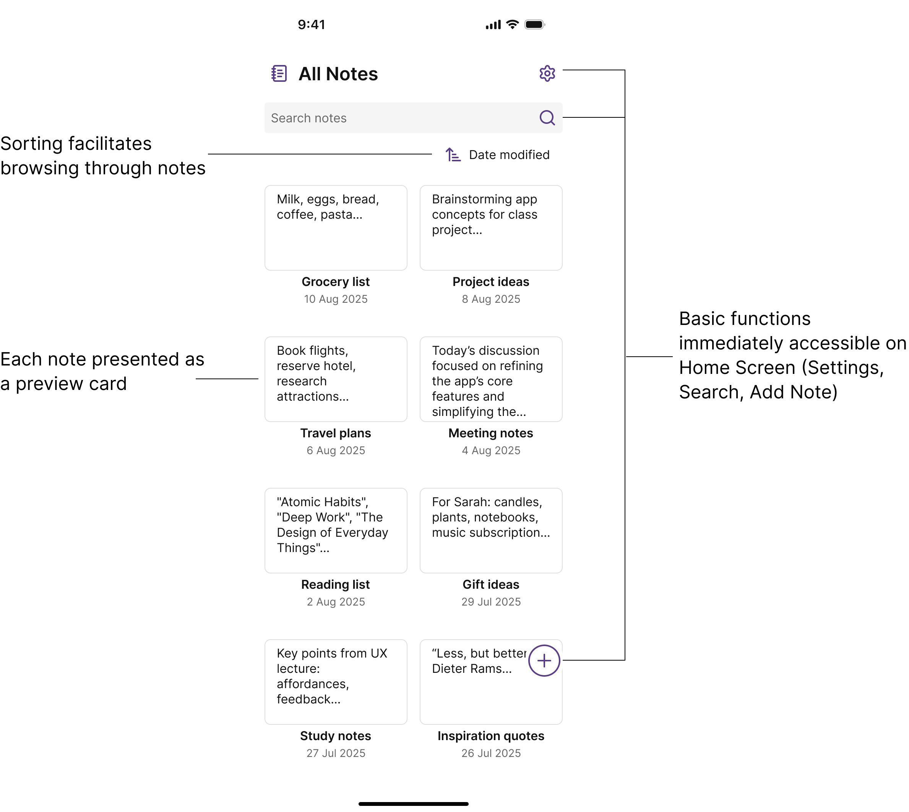
Discover – Understanding the challenge
- Competitor analysis (Samsung Notes, Apple Notes) to understand common patterns
- Identification of core user needs: quick note creation, readability, and easy retrieval
During research, I quickly noticed that most note apps try to do too much — from tagging to handwriting to cloud syncing — at the cost of speed and focus. This insight helped me prioritise a fast, frictionless flow that lets users jot down ideas before they’re lost.
Define – Narrowing the scope
- Functionality over features
- 5 core screens: Welcome, Home, Add Note, Note Detail, Settings
- Functional goals for each screen (e.g. Home = overview of notes, Add Note = frictionless input)
With a strict five-screen limit, the challenge became one of clarity and prioritisation. I mapped out essential interactions and decided that each screen must have a singular purpose. This constraint not only simplified navigation but also aligned with the “less is more” philosophy.
Develop – Exploring solutions
- Low-fidelity wireframes to visualise structure
- Greyscale high-fidelity wireframes
Once the structure was set, I moved into visual exploration. The grayscale stage helped me focus purely on layout, rhythm, and spacing — ensuring usability before adding any visual identity. This step made later colour and typography decisions much more intentional.
Deliver – Designing the solution
- A cohesive UI system with colour styles, typography, and components
- A style guide (colours, text styles, buttons, cards, toggles)
- Light mode + dark mode
Moving into high fidelity, I sought to preserve the app’s simplicity while giving it personality. Inspired by Dieter Rams’ timeless principles, I chose deep purple as a confident yet calm accent. Introducing dark mode and Figma variables allowed me to showcase system thinking while maintaining consistency across both themes.
Hi-fi Wireframes
Translating the grayscale designs into high-fidelity mockups revealed how subtle details — spacing, shadows, and typography — can elevate simplicity into sophistication. Each screen communicates hierarchy clearly, and interactions are designed to feel seamless and natural.
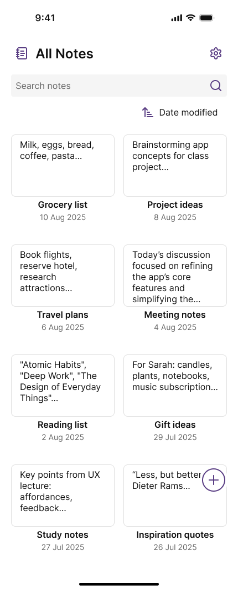
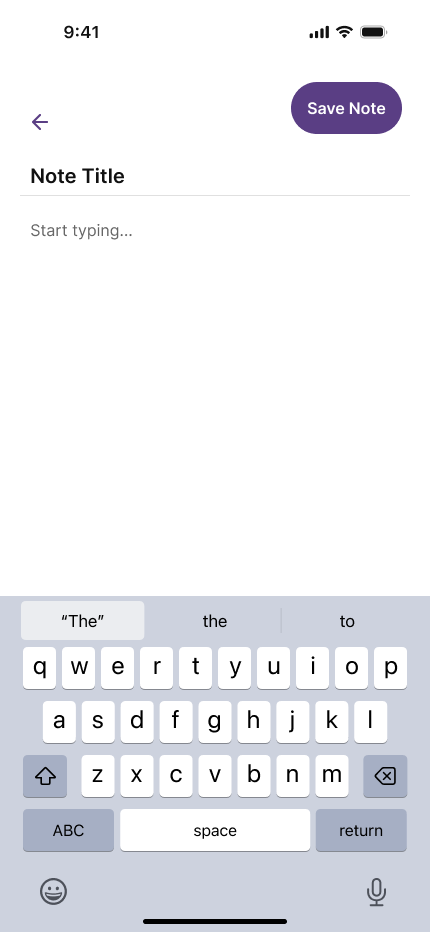
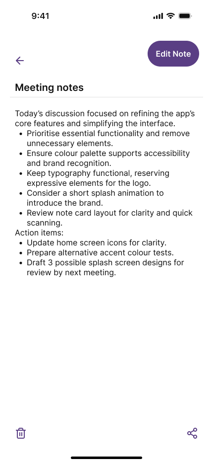
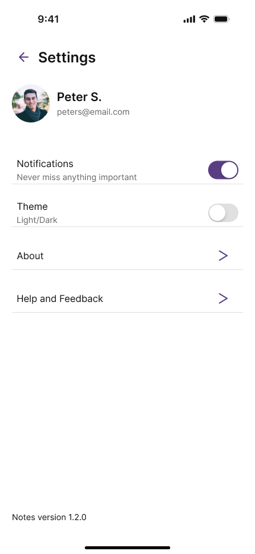
Style Guide
The style guide evolved naturally from the system I built during the design phase. Establishing reusable components and variables made the UI scalable and adaptable to future features. Keeping the palette minimal ensured harmony between light and dark modes while retaining a distinct identity.
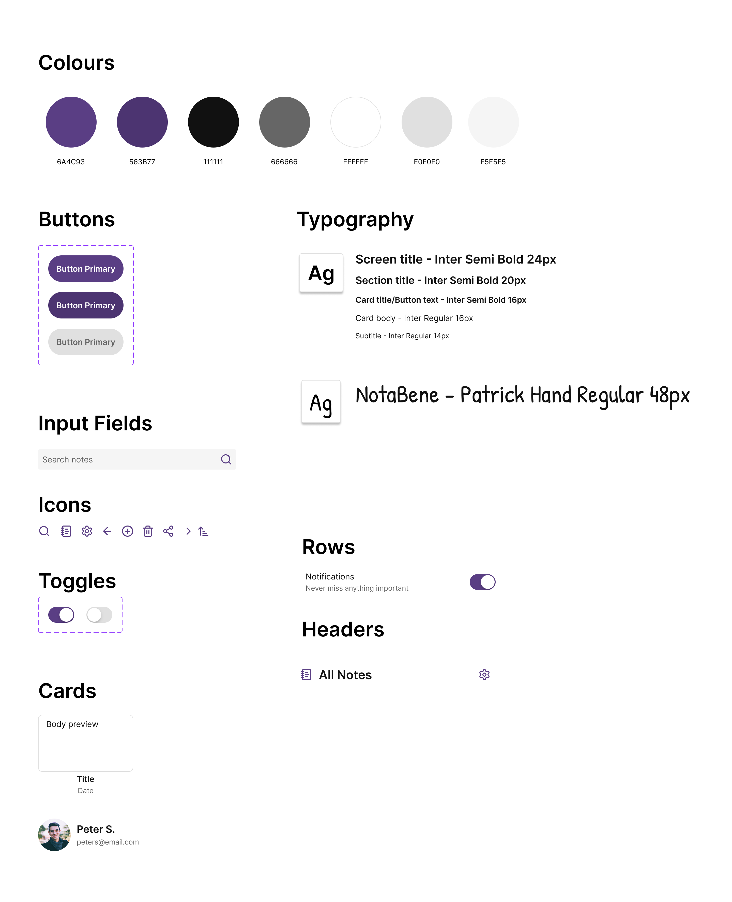
Mobile Screens
Seeing the full app come to life in both light and dark modes was a satisfying milestone. The contrast between the two themes highlights the flexibility of the visual system while keeping the overall tone quiet and unobtrusive. This also demonstrates how design variables can streamline multi-theme systems.
Light Mode
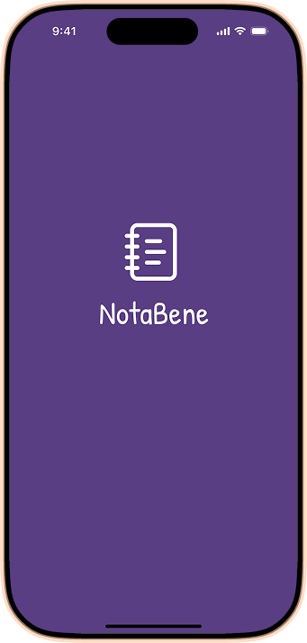
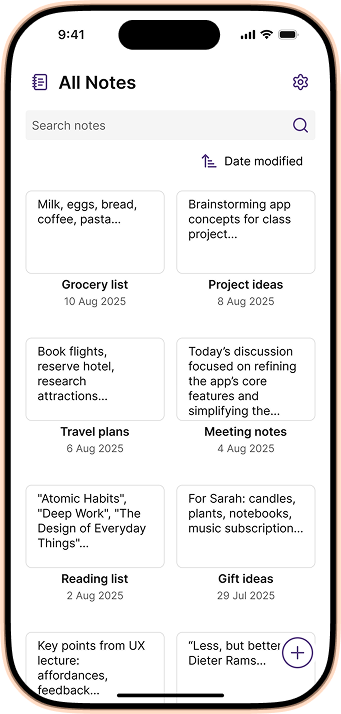
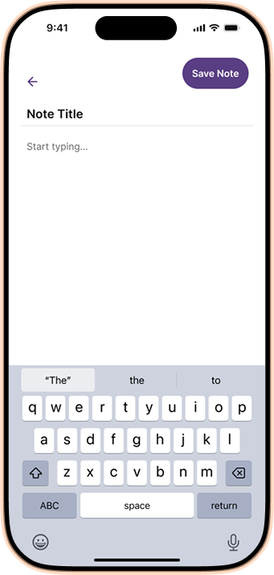
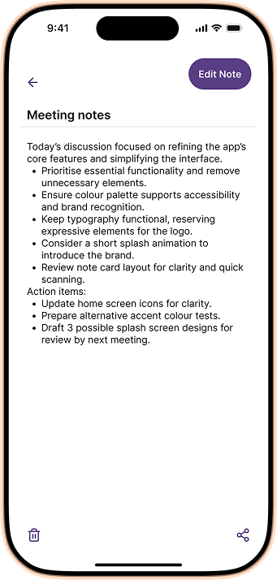
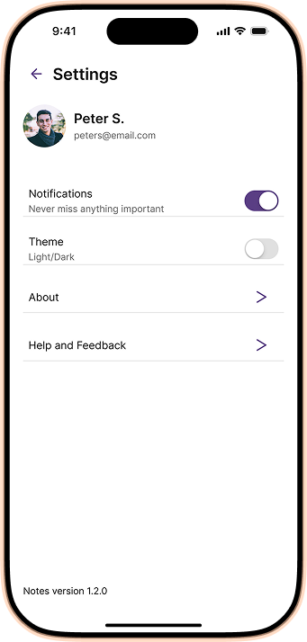
Dark Mode
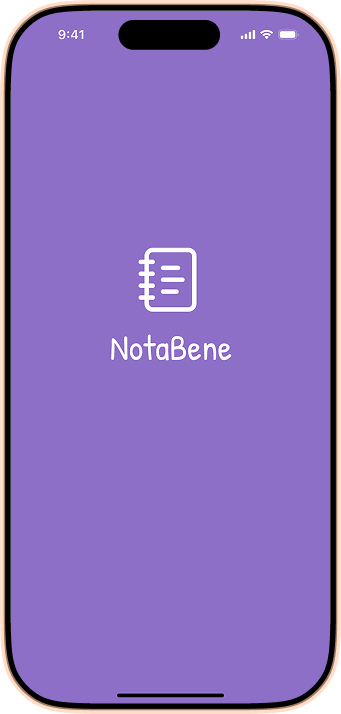
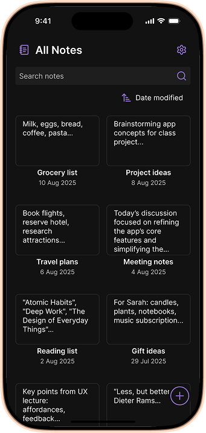
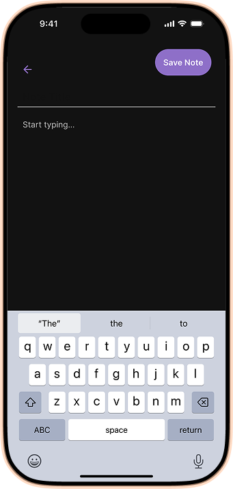
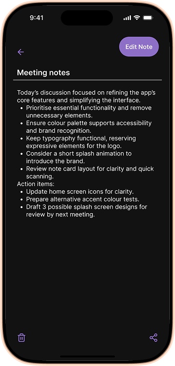
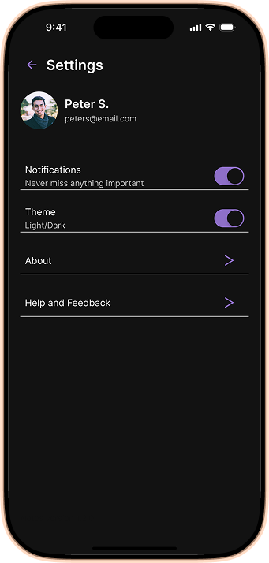
Prototyping
Building the interactive prototype in Figma allowed me to validate usability and flow. Transitions were kept subtle to reinforce the app’s calm personality. The prototype helped test the intuitiveness of the note creation process and fine-tune the behaviour of toggles and buttons.
Insights & learnings
- Designing within constraints clarified priorities (MVP mindset)
- Functionalism taught me how to strip away non-essentials.
- Variables and theming elevated the system thinking aspect.
This project reaffirmed how much creativity lies within limitations. Working under strict constraints pushed me to think critically about purpose and simplicity. It also deepened my understanding of how consistent systems, thoughtful colour design, and typographic restraint can make even the smallest app feel polished and intentional.